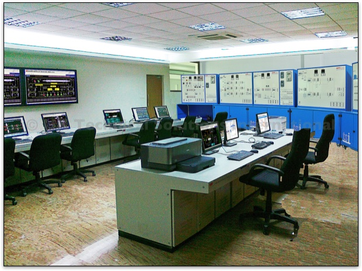

TSI Power Plant Simulator - System Overview
The TSI Power Plant Simulator is a PC-based hi-fidelity, full-scope dynamic Operator Training Simulator that meets the operator training requirements of any Coal/Oil/Gas fired Power Plant. This model is designed to operate over a variety of actual power plant operating conditions.
These include:
- Cold start (no fuel, no utilities, pumps off, controllers in manual, etc.)
- Design Start (normal operating conditions)
- Restart from Trip Conditions
- Normal and Emergency Shut-downs
Instructor Station
The Instructor Station of the Simulator software is the primary window for the Instructor to deliver the training. Using this software the Instructor is able to load a model, introduce faults and monitor the performance of the trainee.
To improve the ease of Instructor actions, a graphical user interface with multiple windows, scroll windows, pull down menus, icons, 3D push buttons and dialogue boxes is provided. All the actions can be carried out using a mouse pointer.
This allows an experienced Instructor to work efficiently and a novice Instructor is able to learn how to use the system quickly.
The simulator can be connected to the TSI Hard-desk System and the trainees can control the power system from the soft-desk.
Using this system, operators learn dynamic process interactions with the same in-depth understanding of the process as with full function direct connect operator-training stations.
Using a PC keyboard or simulated keyboard (on-screen keyboard) or an optional emulated keyboard, the trainee can operate the simulated plant.
The simulated windows for the emulated DCS that are provided to operate the simulator are:
- Overview Window
- Control Group Window
- Tuning Window
- Graphic Window
- Trend Window
- Process Alarm Summary Window
Operator Station
The Operator Station is the heart of any simulation system. It is the window through which an operator or an engineer monitors, controls and manages the process plant.
Our system provides emulation for several standard DCS (Distributed Control System) interfaces including Yokogawa's Centum XL, CS 300 and Honeywell's TDC3000/GUS DCS. All functions and features that are essential for training are included.
Using this system operators learn dynamic process interactions. Using a PC keyboard or simulated keyboard (on-screen keyboard) or an optional emulated keyboard, the trainee can operate the simulated plant.
The simulated windows for the emulated DCS that are provided to operate the simulator are:
- Overview Window
- Control Group Window
- Tuning Window
- Graphic Window
- Trend Window
- Process Alarm Summary Window